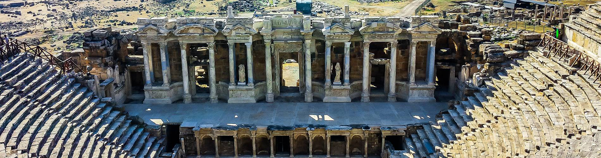
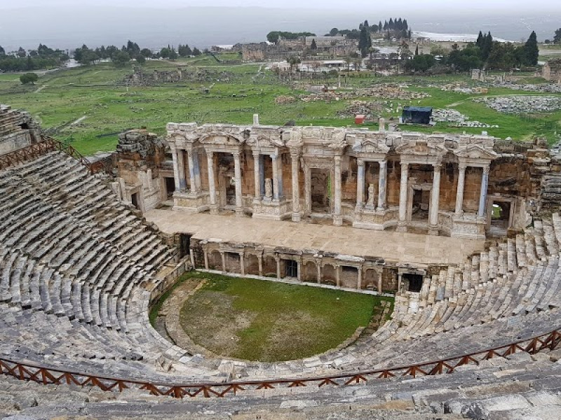
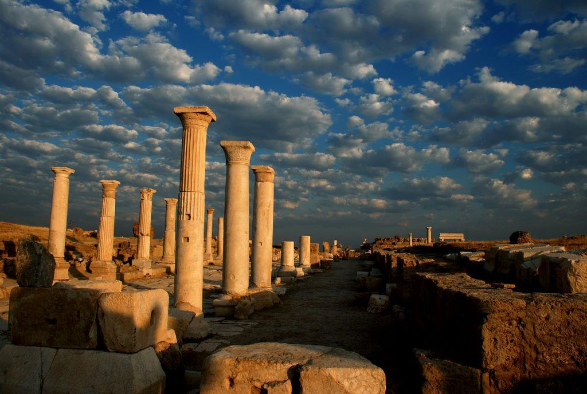
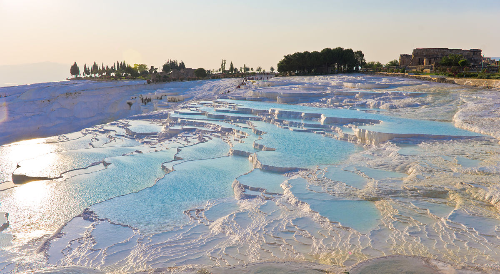
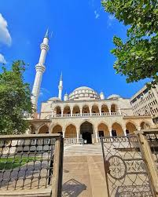
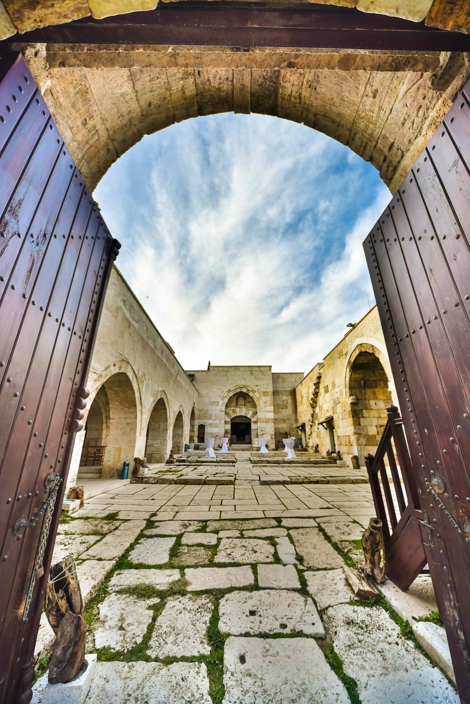

Denizli Kültürel Yerler
Antik Kentlerin ve Doğal Güzelliklerin Buluştuğu Şehrin Kültürel Mirası
Müzeler

Denizli Müzesi
Bölgenin arkeolojik ve etnografik eserlerini sergileyen müze.

Hierapolis Müzesi
Antik kentten çıkarılan eserlerin sergilendiği müze.
Tarihi Yapılar

Hierapolis Antik Kenti
UNESCO Dünya Mirası Listesi'nde yer alan antik kent.

Laodikeia Antik Kenti
Helenistik dönemden kalma önemli bir antik kent.

Pamukkale
UNESCO Dünya Mirası Listesi'nde yer alan doğal güzellik.
Tarihi Camiler

Ulu Cami
Selçuklu döneminden kalma şehrin en eski camisi.

Akhan Cami
Osmanlı döneminden kalma tarihi cami.